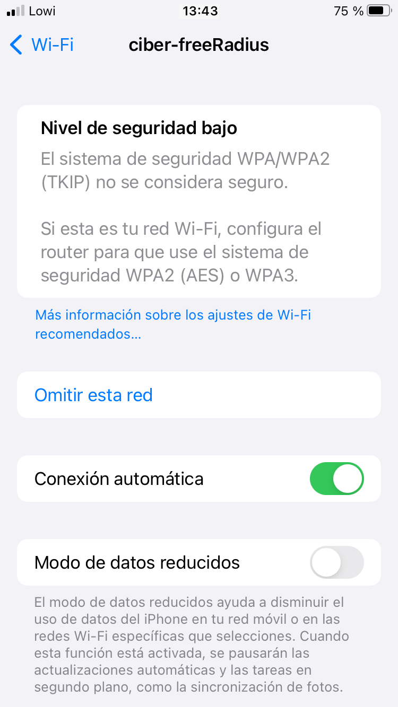
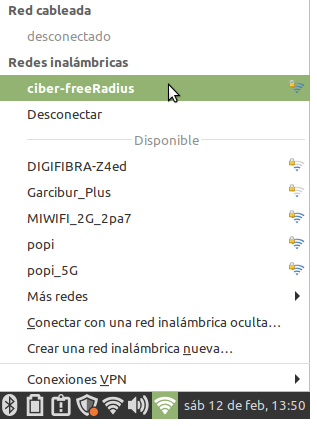
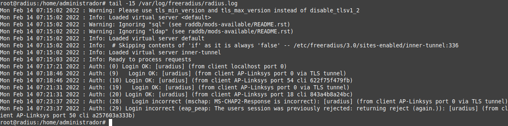

3.1.3 Acceso del usuario o suplicante
1. Recursos necesarios
- Equipo ubuntu server con el servidor freeradius instalado y configurado según el punto 3.1.1.
- Punto de acceso o router wifi configurado como cliente radius según el punto 3.1.2. Para este caso de ejemplo, se ha utilizado un Punto de Acceso D-link 900AP+.
- Dispositivo inalámbrico, a saber: móvil, tablet y un equipo portátil con tarjeta wifi.
2. Acceso del usuario o suplicante al AP
Una vez se ha configurado el servidor y el cliente radius (punto de acceso), es el momento de conectarse desde un dispositivo móvil o desde un equipo portátil/sobremesa por medio de la interfaz inalámbrica y poder obtener los recursos de la red, para esta caso, la posibilidad de navegar por internet.
En la figura inferior, se describe el esquema utilizado en las pruebas de acceso de los dispositivos.
{kind=link}
Figura 1. Esquema de red.
La operativa es la siguiente:
- Buscar la red (SSID).
- Acceder mediante el usuario y contraseña que se ha configurado en el servidor freeRadius, para este caso de ejemplo:
- usuario: uradius.
- password: eeepuc20.
- Navegar por internet.
1. Acceso desde un smartphone
Selección de la red
En primer lugar, se accede al menú Wifi para ver las redes disponibles. Como se observa en la figura inferior izquierda, se tiene disponible la red ciber-freeRadius que es la que se ha configurado en el punto 3.1.2. Una vez se selecciona la red ciber-freeRadius, aparece una nueva ventana donde introducir las credenciales (imagen inferior derecha).
 |
Detección de protocolo de autenticación no seguro
Dado que el AP utiliza WAP, el dispositivo avisa de que se va a acceder a una red no fiable. Si se accede a más detalles, se informa del nivel de seguridad bajo. También se puede acceder al Certificado que se ha generado en el servidor Radius para esta conexión. Para continuar, se regresa a la anterior ventana y se pulsa 'Continuar'.
|  |
Navegación por internet
Una vez se ha autenticado, ya se tiene la red disponible por lo que se puede navegar en internet.
2. Acceso desde un equipo portátil
Selección de la red
En primer lugar, se accede al menú Wifi para ver las redes disponibles. Como se observa en la figura inferior izquierda, se tiene disponible la red ciber-freeRadius que es la que se ha configurado en el punto 3.1.2. Una vez se selecciona la red ciber-freeRadius, aparece una nueva ventana donde hay que introducir la seguridad, en este caso WAP, el protocolo de autenticación, en este caso EAP, chequear 'No se necesita ningún certificado CA', ya que el cliente no dispone del certificado. Por último se introducen las credenciales y se deja la autenticación interna como MSCHAPV2. Para iniciar la autenticación, se pulsa Conectar.
Navegar por internet
Una vez se ha autenticado, ya se tiene la red disponible por lo que se puede navegar en internet.
|  |
Ip recibida
Si se accede a la consola y se consulta la ip, se puede observar que se ha obtenido una ip del router con salida a internet dentro del rango dhcp configurado en el mismo. También se puede observar que se hace un ping a google y contesta.
Si se accede al log del servidor freeradius, se pueden observar las conexiones que se han realizado así como otras que se han provocado para no tener éxito. Como se puede observar, las autenticaciones descritas anteriormente, están reflejadas en las horas 13:43 y 13:50 .
2. Acceso del usuario o suplicante al router en modo AP
Una vez se ha configurado el servidor y el cliente radius (router linksys en modo AP), es el momento de conectarse desde un dispositivo móvil o desde un equipo portátil/sobremesa por medio de la interfaz inalámbrica y poder obtener los recursos de la red, para esta caso, la posibilidad de navegar por internet.
En la figura inferior, se describe el esquema utilizado en las pruebas de acceso de los dispositivos.
{kind=link}
Figura 2. Esquema de red.
La operativa es la siguiente:
- Buscar la red (SSID).
- Acceder mediante el usuario y contraseña que se ha configurado en el servidor freeRadius, para este caso de ejemplo:
- usuario: uradius.
- password: eeepuc20.
- Navegar por internet.
1. Acceso desde un smartphone
Selección de red
En primer lugar, se accede al menú Wifi para ver las redes disponibles. Como se observa en la figura inferior izquierda, se tiene disponible la red linksys-freeRadius que es la que se ha configurado en el punto 3.1.2. Una vez se selecciona la red linksys-freeRadius, aparece una nueva ventana donde introducir las credenciales (imagen inferior derecha).
Certificado
El dispositivo avisa de que el certificado no es fiable ya que no se tiene almacenado el mismo en el dispositivo. Si se accede a más detalles, se puede ver la información del certificado del servidor freeradius. Para continuar, se regresa a la anterior ventana y se pulsa 'Continuar'.
 |
Acceso a la red
Una vez se ha autenticado, ya se tiene la red disponible por lo que se puede navegar en internet.
2. Acceso desde un equipo portátil
Selección de la red
En primer lugar, se accede al menú Wifi para ver las redes disponibles. Como se observa en la figura inferior izquierda, se tiene disponible la red linksys-freeRadius que es la que se ha configurado en el punto 3.1.2. Una vez se selecciona la red linksys-freeRadius, aparece una nueva ventana donde hay que introducir la seguridad, en este caso WAP y WAP2 enterprise, el protocolo de autenticación, en este caso EAP, chequear 'No se necesita ningún certificado CA', ya que el cliente no dispone del certificado. Por último, se introducen las credenciales y se deja la autenticación interna como MSCHAPV2. Para iniciar la autenticación, se pulsa Conectar.
Acceso a la red
Una vez se ha autenticado, ya se tiene la red disponible por lo que se puede navegar en internet.
Encabezado 2
Si se accede a la consola y se consulta la ip, se puede observar que se ha obtenido una ip del router con salida a internet dentro del rango dhcp configurado en el mismo. También se puede observar que se hace un ping a google y contesta.
Si se accede al log del servidor freeradius, se pueden observar las conexiones que se han realizado así como otra que se ha provocado para no tener éxito. Como se puede observar, las autenticaciones descritas anteriormente, están reflejadas en las horas 07:17 y 07:21 .

Obra publicada con Licencia Creative Commons Reconocimiento No comercial Compartir igual 4.0